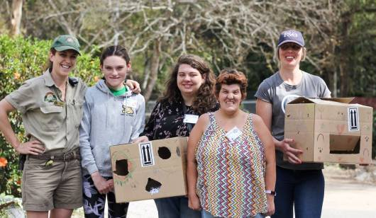
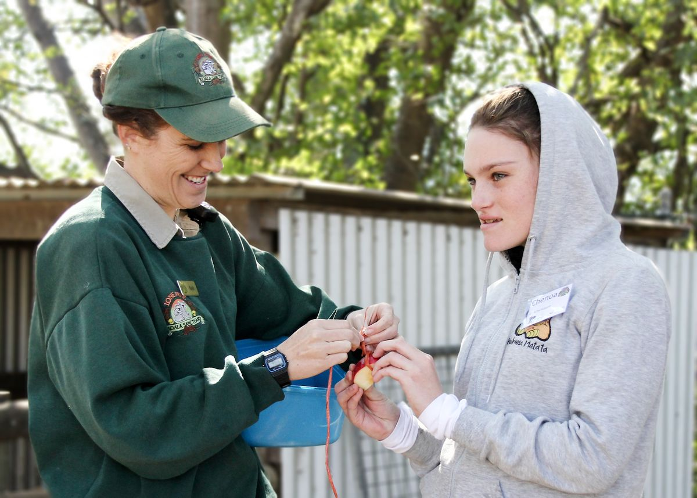
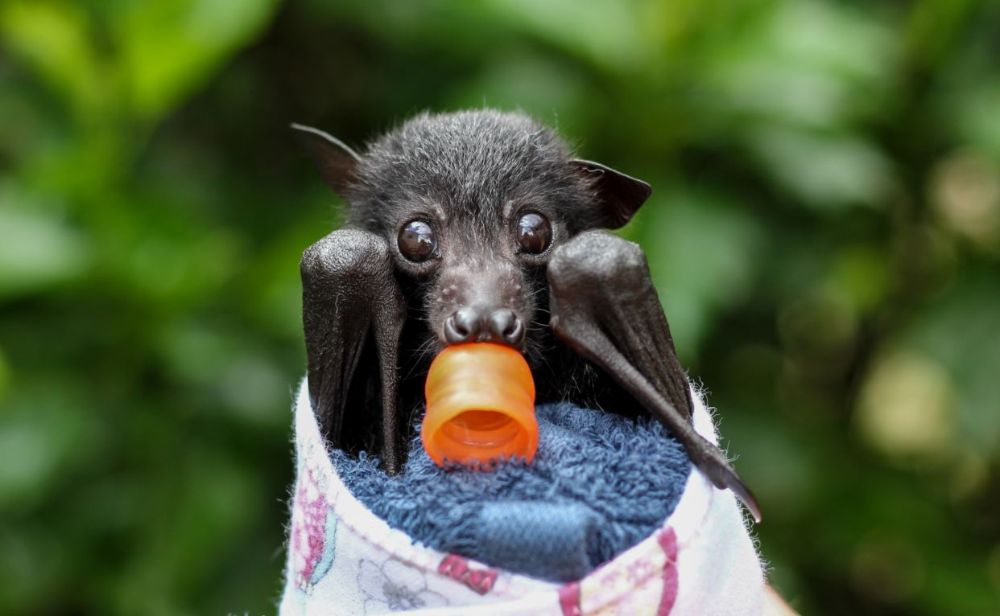
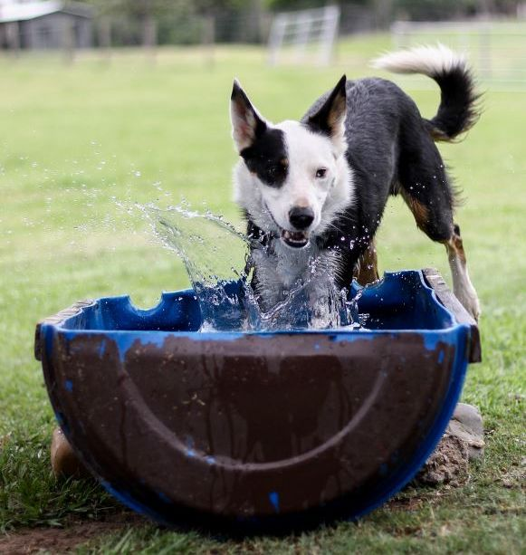

-
Meet the team

Meet Frank, our Wildlife Curator, who joined the Lone Pine family in 2011. As curator, Frank manages the care of Lone Pine's wildlife.
-
Wildlife Volunteer Program

Wildlife volunteers at Lone Pine Koala Sanctuary play an important role in assisting keepers to efficiently complete daily tasks.
-
Social Initiatives
We believe that it is important to celebrate good workmanship, and via our social media channels, newsletters, and sanctuary signage, regularly advertise
-
Job Opportunities

We currently don't have any job opportunities available.
-
Happy Paws Happy Hearts
Coming up with new and exciting enrichment ideas can be tricky and time consuming, however we have recently welcomed a new team.
-
Why we're batty for flying foxes
Some of our keepers have recently become new mums, but not in the way you might expect. While their babies are adorable, wake up throughout the night,
-
Building a Rainforest

One of our greatest privileges is providing safe and enriching homes for the animals within our care.
-
Keeping Animals Cool
Whilst the official first day of summer is still a couple of weeks away, it's safe to say that the summer heat is well and truly upon us.
-
Contact Us
Contact: Phone: +61 7 3378 1366
General enquiries: Email: service@koala.net
Media enquiries: Email: marketing@koala.net